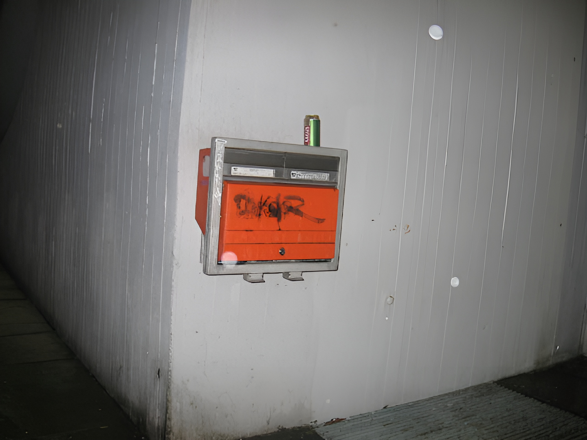

10.
Psychologists use the term “socialization” to designate the process by which children are trained to think and act as society demands. A person is said to be well socialized if he believes in and obeys the moral code of his society and fits in well as a functioning part of that society. It may seem senseless to say that many leftists are oversocialized, since the leftist is perceived as a rebel. Nevertheless, the position can be defended. Many leftists are not such rebels as they seem.